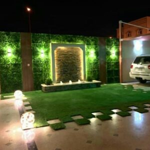
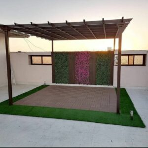
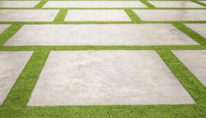
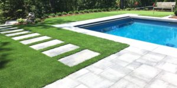
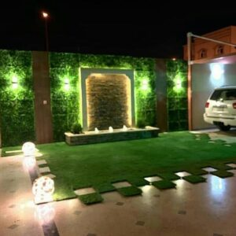
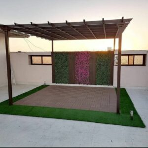
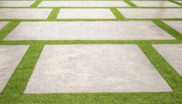
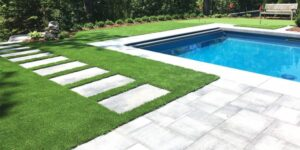

توريد وتركيب العشب الصناعي في المملكة العربية السعودية
نقدم خدمة تركيب العشب الصناعي على أعلى مستوى لجميع عملائنا؛ حيث نوفر مختلف أنواعه سواء كان عشب صناعي أرضي أو عشب صناعي جداري، بجميع ألوانه وكثافاته المتنوعة، والذي يتم الاختيار من بينها وفقًا لرأي العميل مع تعليمات المُهندس المختص بتعيين المكان المُراد تركيب النجيل الصناعي به؛ فيختلف تركيب العشب الصناعي داخل المنازل عن حدائق المنازل والقصور والفلل، عن الحدائق العامة، عن النوادي، حيث يفضل تركيب العشب الجداري والعشب قليل الكثافة داخل المنازل، بينما يتم تركيب العشب الصناعي متوسط الكثافة في حدائق المنازل والقصور والفلل، ويستخدم العشب الصناعي ذات الكثافة الأكبر في النوادي والحدائق العامة حتى يتحمل الضغط عليه، ولا تعتمد الشركة على اسلوب واحد ثابت في تركيبه، وإنما تبتكر كل ما هو جديد وحديث حتى يظهر بشكل لائق وجذاب خاطف للعيون وساحر للقلوب، حيث تقوم بقصه على هيئة أشكال جميلة تتناسب مع ذوق العميل مثل الأشكال المربعة، والدائرية، والمستطيلة وغيرها مما يجعل من الحديقة لوحة فنية غاية في الجمال، وتعتمد شركة اكاسيا لاند سكيب في عملها على أفضل الأدوات والأجهزة التكنولوجية الرائعة لقياس المساحات، ودك الأرض وتركيب النجيل بدقة وسرعة فائقة.
 






